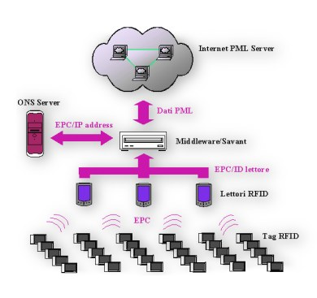

RFID: una rivoluzione per le supply chain
di
Michele Dario De Canio
Sebbene ancora poco diffusa, la tecnologia RFID (Radio Frequency
Identification) promette di essere nei prossimi anni uno dei principali
fattori di successo e di sviluppo per tutte le aziende coinvolte in
processi di produzione e di distribuzione di beni. L’articolo si prefigge
di fornire una breve descrizione di questa tecnologia e di sottolinearne
le potenzialità e i motivi della sua ancora ridotta diffusione.
RFID: che cos’è?
Originariamente l’RFID si presentava semplicemente come
un’evoluzione del diffuso sistema di codici a barre per l’identificazione
degli oggetti.
Sull’oggetto da identificare viene fissato un microchip
(detto tag o trasponder), dotato di una memoria interna (EEPROM),
in cui sono immagazzinate informazioni relative all’oggetto: il suo numero
seriale ed eventualmente altre informazioni di dettaglio, come la data di
produzione, la composizione del prodotto, ecc.
Quando i tag passano nei pressi del campo elettromagnetico
generato da un lettore, inviano a quest’ultimo i dati relativi
all’oggetto a cui sono fissati, consentendone quindi l’identificazione. Degli algoritmi anti-collisione consentono al lettore di
leggere il contenuto di più tag contemporaneamente e in tempi dell’ordine di
frazioni di secondo.
La superiorità dell’RFID rispetto ai tradizionali codici a
barre è evidente.
|
Codici a barre |
|
RFID |
|
Necessità che il lettore ottico "veda" il codice a barre
|
Þ |
La lettura del tag avviene anche in
condizioni di non visibilità e in presenza di materiali intermedi. |
|
Le etichette devono essere pulite e non deformate |
Þ |
La lettura avviene anche in
presenza di polvere, umidità, agenti corrosivi, ecc. |
|
I miglioramenti tecnologici sono
limitati |
Þ |
Attraverso la concezione di nuovi
chip e di nuove soluzioni di packaging è possibile migliorare
ulteriormente la tecnologia |
|
La lettura richiede un’azione manuale ed è singola |
Þ |
La lettura è automatica, in real
time e multipla |
La mancanza di standard e il costo relativamente elevato dei
tag e dei lettori hanno fatto in modo che per anni l’utilizzo dell’RFID
fosse circoscritto all’interno delle aziende e che gli stessi tag venissero
riutilizzati più volte per poter contenere al massimo i costi.
Attualmente però si stanno creando le condizioni per un vero
e proprio boom nell’utilizzo di tale tecnologia.
I tag RFID
I tag possono essere passivi,
semi-passivi e attivi.
I tag passivi
usano come fonte di energia quella del campo creato dal lettore
stesso. Hanno generalmente una portata che può arrivare ad alcuni
metri. Il loro costo si aggira intorno a poche decine di centesimi.
I tag semi-passivi
utilizzano una batteria che gli consente di funzionare a distanze di
alcune decine di metri. Non hanno un trasmettitore integrato, ma
modulano il campo creato dal lettore.
I tag attivi
sono dotati sia di batteria, sia di trasmettitore. Possono operare a
distanze di diverse centinaia di metri. Il loro costo è dell’ordine di
alcune decine di euro.
La scelta del tipo di tag
dipende dall’applicazione e dal contesto operativo.
Di seguito sono riportati
alcuni fattori da tenere in considerazione nella scelta:
- dimensioni e forma;
- distanza reciproca tra i tag;
- durata;
- riutilizzabiltà;
- resistenza in ambienti difficili
(corrosivi, polverosi, umidi,ecc)
- distanza e orientamento del tag rispetto
al lettore;
- range di temperatura di esercizio;
- presenza di interferenze radio
- frequenza radio (LF, HF o UHF);
- capacità di memoria;
- protezione dei dati tramite criptazione;
- numero di tag da leggere
contemporaneamente;
- velocità massima di spostamento dei tag;
- compatibilità con gli standard di
comunicazione ISO ed EPC.
I lettori RFID
I lettori hanno la funzione
di prelevare i dati contenuti nei tag. Hanno prezzi che variano da
alcune centinaia di euro ad alcune migliaia, a seconda delle
funzionalità, di cui si riportano le più notevoli:
- capacità di operare su più frequenze;
- capacità di operare con più protocolli e
standard di comunicazione (ISO, EPC, ecc.);
- protocolli di interconnessione a reti (TCP/IP,
IEEE 802.11, Ethernet, RS 485)
- possibilità di mettere in parallelo più
lettori tramite concentratori o tramite middleware;
- capacità di memoria;
- numero di antenne esterne;
- porte di interconnessione a dispositivi
esterni (sensori, circuiti di controllo, ecc.).
|
Nell’ottobre del 1999 il centro Auto-ID (attualmente noto
come EPC Global) del Massachusetts Institute of Technology sviluppò un
sistema di codifica, noto come EPC (Electronic Product Code), in grado di
identificare elettronicamente e in modo univoco i prodotti.
Da qualche tempo alcuni colossi industriali, sia
statunitensi, sia europei, (tra cui la Wal-Mart, Carrefour, METRO, ecc.)
hanno cominciato di adottare l’EPC nelle proprie filiere di produzione e
distribuzione (supply chain), dando un enorme contributo alla
diffusione dell’RFID-EPC e inducendo una decisa riduzione dei costi dei
dispositivi.
Infrastruttura dell’EPC
Il funzionamento dell’EPC, come evidenziato in figura,
prevede che sul sistema RFID, propriamente detto, sia presente
un’infrastruttura costituita dai seguenti elementi
-
il middleware;
-
i server ONS;
-
la rete di server PML

Il middleware
Finora l’uso della tecnologia RFID è stata limitata a
sistemi in cui era coinvolto un volume di dati relativamente ridotto.
L’utilizzo dell’RFID nelle supply chain implica che il
volume di dati da dover gestire sia enorme e non sia sostenibile dagli
attuali sistemi informatici aziendali. Si rendono pertanto necessari dei
particolari software, noti come middleware, che agiscono da buffer tra il
sistema RFID e i server che contengono le informazioni sui prodotti,
svolgendo in particolare le seguenti funzioni:
-
monitorare i lettori RFID;
-
gestire le false letture;
-
aggregare e filtrare i dati provenienti dai lettori RFID;
-
eseguire query verso i server ONS.
Object Naming Service (ONS)
Si tratta di un sistema del tutto simile al DNS (Domain
Naming System) usato in internet: ricevendo in input un codice EPC è in
grado di fornire l’indirizzo IP del server che contiene le informazioni sul
prodotto identificato da quell’EPC.
Server PML (Physical Markup Language)
I server PML contengono tutte le informazioni di dettaglio
dei prodotti, per esempio:
-
informazioni di localizzazione;
-
informazioni sulle proprietà fisiche del prodotto (es il
peso) e dell’ambiente (es la temperatura);
-
informazioni sulla composizione dei prodotti, sulla
storia dei componenti, ecc;
-
data di produzione e di scadenza.
Le potenzialità
Il campo in cui la tecnologia RFID promette di apportare i
suoi benefici maggiori è nella gestione della catena di produzione e
distribuzione di beni.
La complessità della catena naturalmente varia da settore a
settore e da azienda ad azienda. In generale la gestione delle supply chain
può essere vista come la supervisione dei dati, anche di natura economica e
finanziaria, relativi ai prodotti così come essi si muovono attraverso i
differenti processi in cui sono coinvolti, sia all’interno di una stessa
azienda, sia nel passaggio da un’azienda all’altra.
Come stanno dimostrando le esperienze in corso e gli studi
condotti sinora, Sono numerosi i vantaggi che l’RFID può apportare nel
migliorare il funzionamento e l’efficienza delle suppy chain.
-
Consente di rilevare automaticamente quando un carico ha
lasciato un deposito o un centro di distribuzione. Questo permette di
generare automaticamente una notifica di spedizione al destinatario in
tempo reale e di inviare in tempo reale anche la fattura.
-
I prodotti ed eventualmente i loro componenti possono
essere "tracciati" lungo il loro percorso nella catena di produzione e di
distribuzione, consentendo di conoscere l’effettiva provenienza dei
prodotti, così come per esempio è richiesto da alcune direttive
dell’Unione Europea per la tutela dei consumatori.
-
Uno dei maggiori problemi nelle supply chain è la perdita
di prodotto o shrinkage, che può essere stimato tra 2 e 5 % dello stock.
Le cause possono essere varie: ordini errati, furti, inefficiente gestione
degli stock. L’RFID tramite le sue capacità di tracciamento e
identificazione permette di localizzare dove si verificano le perdite.
-
Consente per esempio di autenticare i prodotti, in
particolare quelli ad alto valore, e di distinguerli quindi da quelli
contraffatti e di evitare frodi sui beni restituiti al mittente
-
Permette di ridurre le discrepanze tra quanto spedito dal
fornitore e quanto ricevuto dal cliente.
-
La gestione degli stock è una fase essenziale per i
venditori finali: degli studi hanno dimostrato che in media sugli scaffali
i prodotti mancano per il 7% del tempo a causa di inefficienze nella
gestione degli stock, causando notevoli perdite a causa delle mancate
vendite. Collocando lettori RFID sugli scaffali, si rileva automaticamente
l’inventario dello scaffale, consentedo per esempio di far partire
automaticamente gli ordini per il reintegro dei prodotti e per tenere le
scorte sempre al livello ottimale. In aggiunta il sistema potrebbe
attivare meccanismi di abbassamento automatico dei prezzi per le merci
dello scaffale, quando si avvicina la data di scadenza.
-
Nei centri di distribuzione il lavoro manuale assorbe
circa il 70% dei costi. E’ stimato che l’impiego di RFID può ridurre
questi costi del 30%, rimuovendo la necessità dell’intervento manuale per
la lettura dei codici a barre.
I limiti
I problemi maggiori che possono limitare la diffusione della
tecnologia sono principalmente legati ai seguenti fattori:
-
la necessità di ridurre i costi dei dispositivi impiegati
nell’RFID: l’obiettivo è raggiungere il costo di 5 centesimi per tag e di
100$ per i lettori;
-
la scarsa conoscenza di questa tecnologia da parte delle
aziende: i costi possono subire un reale abbassamento solo se se ne
diffonde l’impiego. Una ricerca condotta negli USA dalla Benchmark
evidenzia che solo il 26% delle aziende intervistate conosce la tecnologia
e solo il 2% la usa;
-
la necessità di garantire a costi contenuti il massimo
livello di sicurezza, per impedire che persone non autorizzate possano
penetrare nei sistemi informatici e possano compiere atti di sabotaggio,
di spionaggio industriale o di contraffazione;
-
la necessità di creare strutture super partes in grado di
gestire e sincronizzare la rete di server PML;
-
la necessità di adattare la tecnologia ai singoli contesti
aziendali e alle singole applicazioni.
Conclusioni
L’RFID sta convincendo un numero sempre maggiore di aziende
ad introdurla nelle proprie supply chain, sebbene in alcuni casi ancora solo
a livello di trial.
Molte aziende sono indecise se adottarla da subito o
attendere che si consolidi maggiormente e che una maggiore diffusione ne
riduca ulteriormente il costo.
Naturalmente l’adozione dell’RFID va gestita correttamente:
la tecnologia non è plug and play e va valutato accuratamente il suo impatto
con gli esistenti sistemi informatici aziendali.
Tuttavia, come si è visto, i vantaggi offerti sono
molteplici e di grande portata. E’ prevedibile che le aziende che
cercheranno di adottarla per prima riusciranno a guadagnare un vantaggio
competitivo rispetto alle altre, non solo per i benefici immediati che la
tecnologia consente di apportare sui processi esistenti, ma anche perché
l’esperienza che acquisiranno permetterà loro di usufruire dei nuovi servizi
che l’RFID consentirà di creare.
© 2005 - Eccellere -
Business Community |